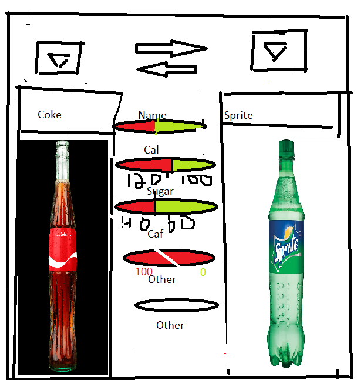

My website is going to be a comparison website. I think I’m going to compare soft drinks. The purpose of the website will be to allow people to quickly and easily compare the contents of the 2 drinks. Things like calories, sugar, and caffeine content will all be included. Hopefully i will be able to add UX like sliding bars or graphs to possibly better the user experience and make the data portrait more clean and useful. I also may consider adding columns or ads, so that the website could be of benefit for me.
There will be text in the form of data, such as calories, sugar etc. There will also be the names of the soft drinks. On the images side of things, there will be pictures of the bottles and logos, allowing the user to easily identify which soda they are looking at.
The purpose of my website is to be informative. It will allow people to quickly, easily, and accurately compare between the 2 drinks. It will allow people to make good, healthy choices.
My website will serve the health community. When people want to make a healthy choice on deciding what to drink, my website will allow them to do this.
My target audience will be people who are interested in making healthier choices with the drinks they choose, but maybe do not have time to do a bunch of research and experimentation to find what works best for them. Hopefully, once they find my website, whenever they are presented options on what they can choose to drink, they will revisit my website, giving me repeat visitors.
These websites are similar to my website as they present data on different drinks, however, they are all displayed in article form, and are not all the easiest to read
The design lesson that taught me the most was lecture 12. Before lecture 12, all the CSS we had learned was doing simple things such as changing the color of text or just popping an image in and changing the background color. Once we started learning about floating boxes and images around, it really opened up the possibilities. Once we learned this, it felt like I could make a website that actually looked good, that actually had some style to it, more than just random colors and the ability to put images into the web page. Before lecture 12, I was still kind of confused on how all of these basic CSS things were going to come together and make a webpage that actually looked even semi professional, but that lecture really opened my eyes.
Being able to move things around really makes a website pop (if done correctly of course). If you can’t float items around the page, then all you really have is a glorified word document. Sure, it looks ok, but it is extremely linear and there is no real reason for interest while reading it besides the content itself. Once you can start floating the items around, the level of possible creativity spikes exponentially. You can start adding columns, images next to text instead of below it, along with many other things. During this lecture, it was a lot to take in, but when I went back and looked at it again, I realized how much I had learned from it that first time.
I am planning not using a template and instead building my own, below is a rough sketch
As you can see, it follows a 2 column dersign, with dropdown menus aloowing the user to easily swap drinks to compare, and a flip button in the middle
My website will have 1 main page, the one above in the picture, as well as some smaller "article" like pages, describing the different data, how it was collected, what it means, ect...
The functionality of the main page will be comparing the 2 selected drinks, as well as allowing the user to select different drinks seamlessly. The other pages will have less functionality, and priamrily just be a place for the mini articles that I write to be stored
The navigation bar will be at the bottom of the page, with links to all of the different mini articles, as well as a link to a webpage describing this project (aka about us)
Due to the functionality required for my webpage, I will try and build my own custom CSS template, based on a 2 column setup
I will use the SLU domain, as it is what I am familiar with and I know it works
While actively coding my website, I will test it in the local browser that VS code generates. For actual testing, I will test the webpage in the chrome browser as well as the safari browser on mobile. I chose the local VS code broswer for convienice and Chrome and Safari due to their popularity